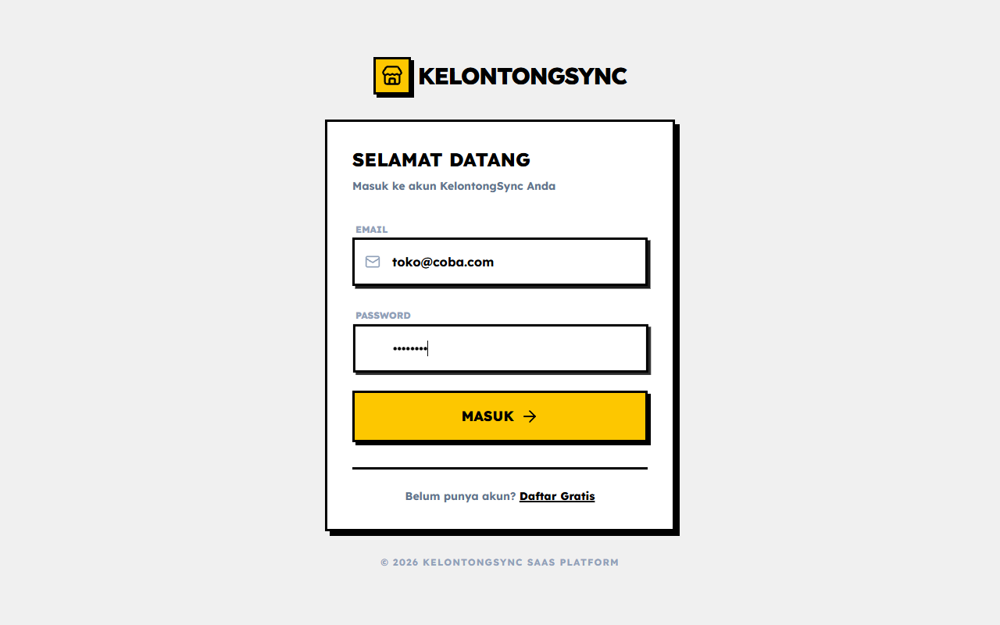
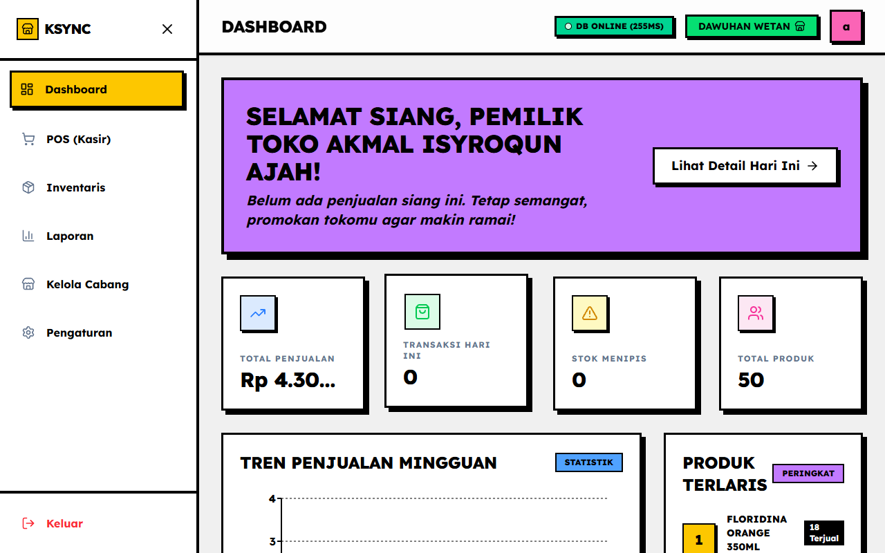
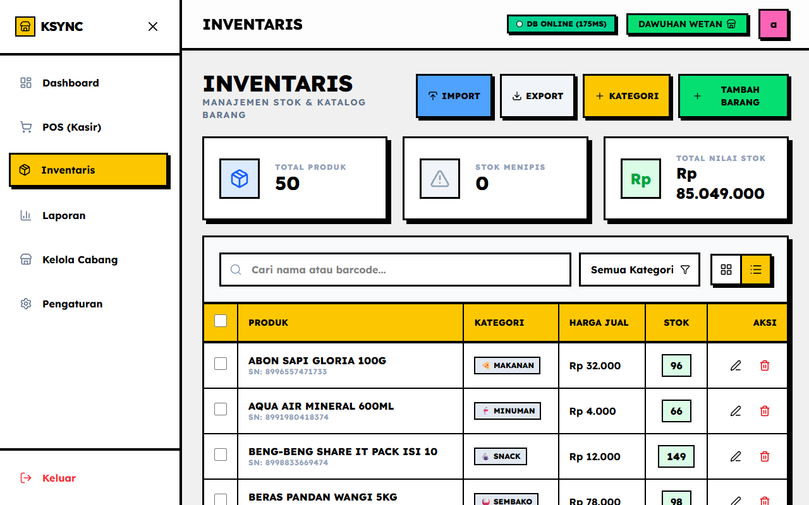
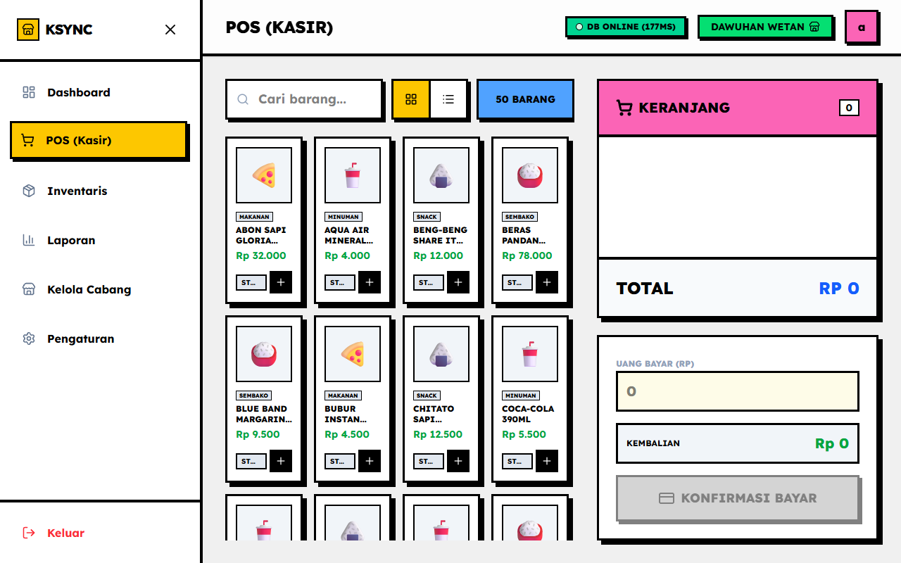
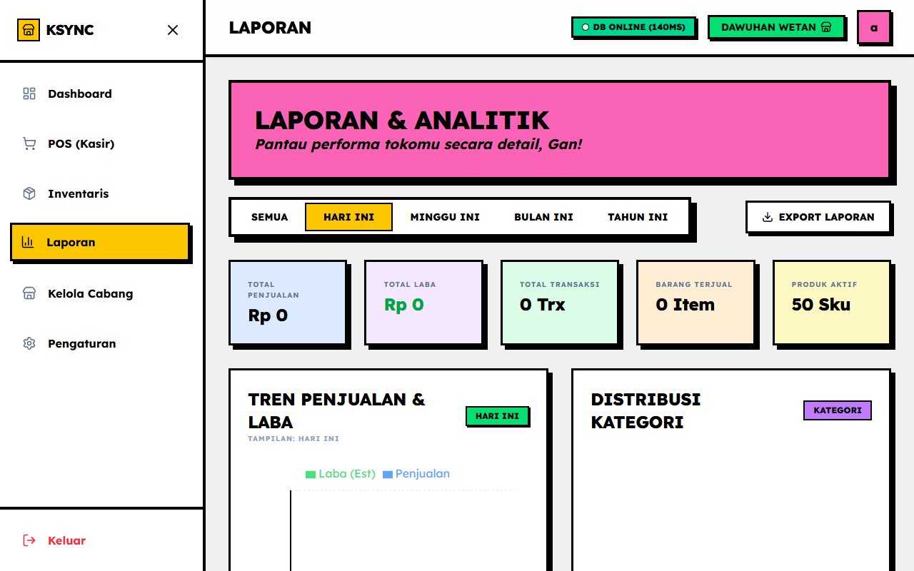
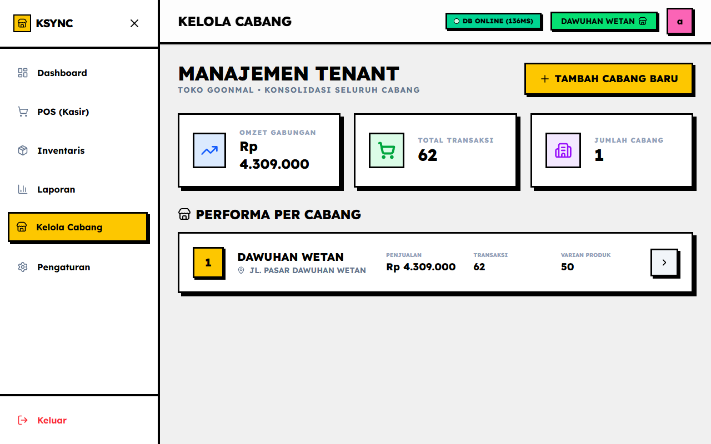

Dokumentasi KelontongSync
Aplikasi Point of Sales (POS) dan manajemen toko yang dirancang khusus untuk toko kelontong dan usaha mikro dengan konsep desain Neobrutalism.
Tujuan dan Manfaat
Memudahkan pemilik toko dan kasir dalam melakukan transaksi, memonitor stok barang (inventaris), serta menganalisis laporan penjualan dari berbagai cabang secara real-time dan terpusat.
Target Pengguna
- Pemilik Bisnis / Toko: Memonitor penjualan, inventaris, dan mengatur cabang.
- Pegawai Toko / Kasir: Melayani transaksi pelanggan sehari-hari secara langsung.
2. Panduan Penggunaan Fitur
Berikut adalah panduan penggunaan fitur-fitur KelontongSync secara berurutan sesuai dengan alur penggunaan sistem:
2.1 Halaman Login

Fungsi: Gerbang masuk utama ke dalam aplikasi.
Langkah: Masukkan email dan kata sandi yang telah terdaftar, kemudian tekan tombol Masuk untuk diarahkan ke Dashboard.
2.2 Dashboard Utama

Fungsi: Pusat informasi real-time performa bisnis.
Langkah:
- Setelah login, Anda akan langsung melihat Dashboard.
- Analisis Total Omzet dan Total Transaksi hari ini.
- Pantau grafik pergerakan penjualan selama 7 hari terakhir.
2.3 Manajemen Inventaris

Fungsi: Memasukkan dan mengelola data produk sebelum dijual.
Langkah:
- Buka menu Inventaris.
- Untuk menambah barang, klik Tambah Produk lalu isi Nama, Harga, Stok Awal, dan Kategori.
- Pantau peringatan warna merah pada produk yang stoknya sudah mulai menipis agar segera di-restock.
- Klik ikon edit untuk menyesuaikan harga atau koreksi stok jika diperlukan.
2.4 Kasir (Point of Sales)

Fungsi: Modul untuk melayani transaksi pelanggan.
Langkah:
- Klik atau cari produk yang diinginkan dari daftar, produk akan masuk ke panel Keranjang di sisi kanan.
- Sesuaikan kuantitas setiap item (
+atau-). - Masukkan nominal uang yang diterima dari pelanggan.
- Sistem otomatis menghitung kembalian. Klik Bayar untuk menyelesaikan transaksi dan mencetak struk belanja.
2.5 Laporan dan Analisis

Fungsi: Melihat rekapitulasi data penjualan.
Langkah:
- Masuk ke halaman Laporan.
- Sesuaikan rentang waktu (harian, mingguan, bulanan) di pojok kanan atas.
- Lihat riwayat semua transaksi yang pernah terjadi. Anda dapat mencetak kembali struk jika dibutuhkan.
- Ekspor laporan dalam format yang dibutuhkan untuk keperluan pembukuan eksternal.
2.6 Manajemen Cabang & Pengaturan Toko

Fungsi: Mengelola multi-lokasi dan identitas bisnis.
Langkah:
- Gunakan menu dropdown pemilih cabang untuk melihat data cabang lain (jika memiliki multi-cabang).
- Buka menu Pengaturan untuk memperbarui Nama Toko, Alamat, dan Telepon. Data ini yang akan muncul di header struk yang tercetak untuk pelanggan.
- Atur nominal/persentase PPN (jika ada) di halaman pengaturan.
3. Tim Pengembang
Aplikasi KelontongSync dikembangkan secara kolaboratif oleh tim berikut: